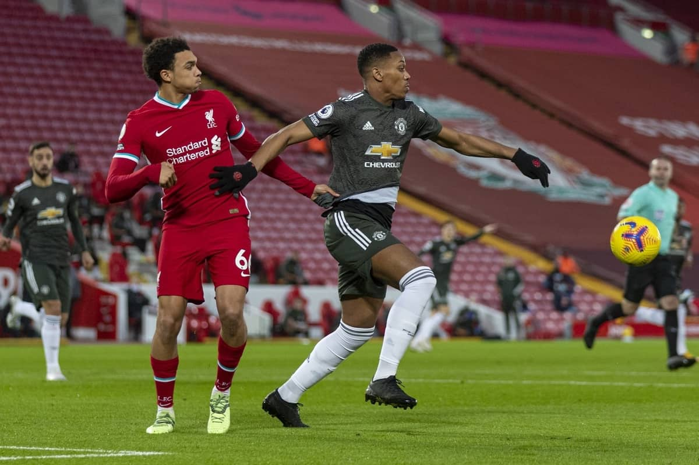
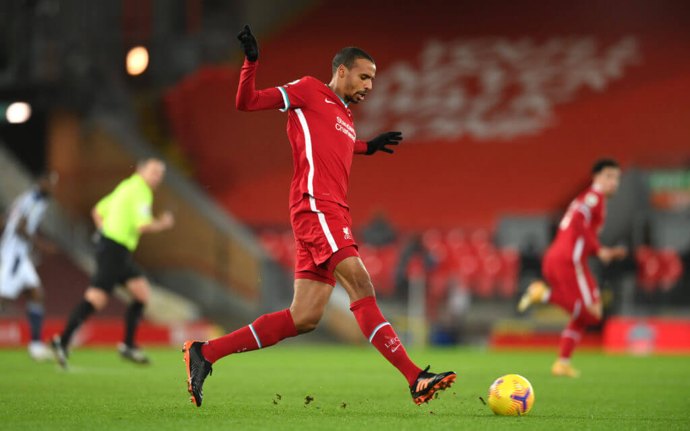

-
Liverpool and Manchester United Play Out Scoreless Draw
by Lucas Kellersohn - January 18, 2021
kellersl@umich.edu

Final Score: Liverpool 0 - 0 Manchester United
The most anticipated game of 2021 so far saw Manchester United traveling to Anfield to face their rivals Liverpool in the North West Derby. With much anticipation leading up to the match, the game failed to live up to all of its expectations, resulting in a relatively dull affair as both teams failed to net a goal. Liverpool commanded possession yet created no real chances while Manchester United absorbed the Reds’ attacks and attempted to press on the counter with their only couple of chances being met by the hands and feet of Alisson. Here are five key takeaways from the match:
1. Liverpool’s Front Three in Disarray
Hailed as one of the deadliest attacks in all of Europe over the last few seasons, Liverpool’s trio of Salah, Mane, and Firmino have fallen into one of the biggest ruts in their time at the Merseyside club. Following their scoreless draw yesterday, the Reds have now gone three consecutive games without a goal for the first time since 2005. Not only are they not scoring, but it is fair to say that both Salah and Firmino are failing to even create chances. With injuries taking Diogo Jota out of the mix for Liverpool, manager Jurgen Klopp might turn to the likes of Taki Minamino and Xherdan Shaqiri for a change of pace in their next match against a struggling Burnley side. With matches against the likes of Tottenham, Man City, and Leicester coming up before their return to Champions League football, the Reds have their work cut out for them in order to figure out how to get their players scoring again if they hope to stay in the title race.
2. Ole is at the Wheel
Extending their away unbeaten run in the league to 16 games, Manchester United are playing some of their best football in years. Sitting two points clear of their fellow Manchester club and Leicester, it appears that manager Ole Gunner has inspired his players to be at their best, with all facets of their team clicking. Harry Maguire, often ridiculed for his mistakes following his massive transfer fee, is coming into form now and turning into a true anchor for their backline. Midfielders Bruno Fernandes and Paul Pogba are playing some of their best football right now, with Bruno now being the only players in the Premier League to win four Player of the Month awards in a calendar year. It is way too early to call a winner in such a close title race, however, there is a feeling around this Manchester United team that they just might be able to get it done. With a relatively easy run of games ahead, Man U extend their lead at the top of the league if they can maintain their current form.
3. The Reds Need a New Center Back
Despite their defensive resilience against Manchester United, it is becoming increasingly apparent that Liverpool need to bring in a new central defender. While Fabinho has settled into his deeper role phenomenally, their lack of a second option creates problems with their lineups. Joel Matip would be the clear choice, however, his injury struggles have proved that he is not a reliable option. Nat Phillips and Rhys Williams both showed some promise but their lack of experience and pace has been exposed on multiple occasions. Their last option was on display yesterday, as Jordan Henderson dropped into the backline alongside Fabinho. While Henderson had a solid defensive performance, Liverpool have shown an inability to create chances without him in the midfield. Were they able to start a natural center back alongside Fabinho and allow Henderson to play over Shaqiri in the midfield, it could have been a very different game for the Reds. With the transfer window coming to a close in a couple of weeks, it would be wise for Liverpool to look elsewhere for a new center half.

4. Disappearing Bruno
Ever since his arrival at Man U, Bruno Fernandes has had a massive impact on the team’s performance. Creating lots of chances for his teammates and scoring plenty of his own, Bruno has been a spark plug for what was a struggling attack. However, Fernandes has continually had struggles against the traditional “big six” Premier League teams. In his ten appearances against these top clubs, Bruno has failed to score from open play and has only two wins in this time. In his 89 minutes against Liverpool yesterday, Bruno had an abysmal 60% pass accuracy and had little to no impact on the game outside of a free kick shot that he put just wide. In order to win the league, Manchester United are going to have to come away with all three points against other big teams. With all of the teams in the top six spots all being very close together on points, it will take some big wins against big teams for whoever is to lift the trophy at the end of the season. If Man U hope to be the team to do so, Bruno will have to come up big when it matters and not just against smaller clubs.
5. Jota or Firmino?
Following a fantastic start to his tenure at the club, Liverpool’s new signing Diogo Jota has been out with an injury over the past couple of months. With his return slated for early February, Jurgen Klopp will be faced with the decision of where to fit him into this team. With Thiago returning into the midfield and Henderson and Wijnaldum almost locked in there, it seems unlikely that this midfield trio will change much. Mane has continued to be exceptional upfront and despite Salah’s lacking performances occasionally, he is still the top scorer in the league. This leaves one spot open that is sure to be up for contention. Bobby Firmino has had a rather tough past two seasons, failing to produce many goals at the center of Liverpool’s attack. There is no doubt he is important to the way Liverpool builds up, however, his lack of goal-scoring ability has really hindered them lately and could lead to Firmino being left out of the squad. As the Reds struggle to produce goals week in and week out, it seems logical that a serial scorer like Jota has been exactly what the club needs to get on track. Klopp has had nothing but praise for Firmino, so it will be interesting to see if the German manager is willing to bench him once Jota is fit to play again.